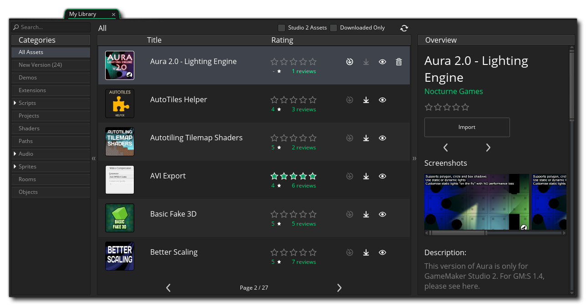
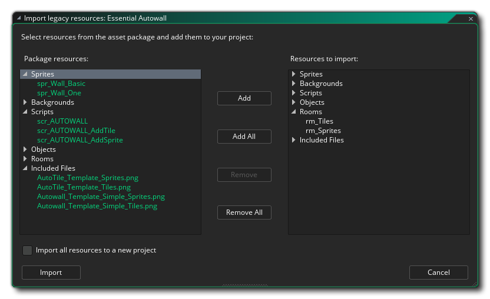

Le marché est le marché en ligne de YoYo Games pour l'achat et la vente de paquets d'actifs. Un paquet d'actifs peut être à peu près tout ce qui concerne GameMaker Studio 2, à savoir: les sprites, les scripts, les shaders, ou même les moteurs de jeu complets ou les frameworks. Pour pouvoir créer, acheter et vendre des packages, vous devez d'abord être enregistré sur le Marketplace en tant qu'éditeur et vous être connecté via GameMaker Studio 2 (ce sera automatique lorsque vous vous connectez au programme) ou depuis la page principale Marketplace. Vous pouvez trouver tous les détails sur la façon de devenir éditeur à partir de l'article de la base de connaissances YoYo Games Marketplace - Configuration d'un compte d'éditeur.
Dans cette fenêtre, vous pouvez accéder à votre compte d'utilisateur (et à ses comptes d'éditeur associés) en haut à droite de la page. Vous pouvez également parcourir et acheter ou télécharger des packs d'actifs à utiliser. Vous trouverez des informations complètes sur l'achat et le téléchargement d'un pack d'actifs dans l'article du centre d'aide YoYo Games intitulé Marketplace - Purchasing An Asset Pack.
Vous pouvez accéder facilement au Marketplace depuis le menu déroulant Marketplace situé en haut de l' GameMaker Studio 2, et vous avez la possibilité d'ouvrir votre bibliothèque de packages d'actifs, de créer vos propres ressources (assets ou didacticiels) et de mettre à jour toute version existante. paquets. Ces idées sont expliquées plus en détail ci-dessous:
La fenêtre Bibliothèque vous montre les paquets que vous avez achetés et vous donne la possibilité de les télécharger et / ou de les ajouter à votre projet. 
Sur la gauche se trouvent les différents filtres de catégorie que vous pouvez utiliser pour voir ce que vous avez dans chacun d'entre eux, et au milieu vous avez la liste des actifs dans votre bibliothèque. Chacun peut être sélectionné pour que vous puissiez voir un aperçu de ce qu'il fait (sur la droite) et ils ont tous des icônes pour voir, télécharger ou installer le paquet d'actifs dans un projet. Notez que vous avez deux filtres supplémentaires en haut de la fenêtre principale, dans lesquels vous pouvez sélectionner uniquement les actifs créés spécifiquement pour GameMaker Studio 2, ainsi qu'un filtre pour afficher uniquement les actifs que vous avez déjà téléchargés sur votre GameMaker Studio machine. Vous pouvez également actualiser la liste des actifs affichés à tout moment en cliquant sur le bouton Actualiser:
Pour ajouter un paquet d'actifs à votre projet actuel, vous devez d'abord le télécharger en cliquant sur le bouton Télécharger et lorsque le téléchargement est terminé, vous pouvez cliquer sur le bouton Importer pour l'ajouter à votre projet. L'ajout d'un package de cette manière créera une extension dans votre projet actuel et vous demandera de sélectionner parmi les différentes ressources du package d'actifs pour choisir celles que vous souhaitez ajouter (ou vous pouvez les importer toutes). Vous pouvez également sélectionner l'option Importer toutes les ressources dans un nouveau projet et, au lieu d'ajouter les éléments à votre projet actuel, GameMaker Studio 2 vous invite à attribuer un nouveau nom de projet et à enregistrer l'élément dans ce projet. Notez que si vous accédez directement à la bibliothèque à partir de la page de démarrage, vous constaterez que la plupart des ressources ne peuvent pas être ajoutées individuellement et que vous devrez utiliser le bouton Ajouter tout. C'est parce que vous n'avez pas de projet pour ajouter les assets et que GameMaker Studio 2 doit créer un nouveau projet pour que vous ajoutiez tous les assets dans le package (lorsque vous cliquez sur le bouton Importer, vous serez invité à enregistrer le nouveau projet avec le nom de votre choix). 
Avec les actifs ajoutés à votre arborescence de ressources, vous pouvez maintenant les utiliser dans votre jeu comme vous le feriez pour les ressources que vous avez créées vous-même. Veuillez noter que les ressources téléchargées depuis Marketplace sont destinées à un usage individuel et ne peuvent pas être partagées avec des tiers - bien que vous puissiez les sauvegarder et les copier vers d'autres sites pour des raisons de sécurité - à moins que l'actif ne contienne un CLUF contraire.
REMARQUE: Les personnes qui créent des packs d'actifs pour le Marketplace travaillent très fort pour créer une excellente ressource à utiliser. Veuillez donc évaluer les actifs que vous achetez lorsque vous les avez testés ou si vous les utilisez. Cela encourage le développeur et est également un guide utile pour les autres utilisateurs quant à la qualité des actifs disponibles. Vous pouvez facilement évaluer vos éléments téléchargés à partir de la fenêtre Bibliothèque.
Lorsque vous sélectionnez l'option Créer un package dans le menu IDE, vous accédez à l'espace de travail suivant:
Vous devez d'abord sélectionner l'identité de l' éditeur pour lequel vous voulez publier le package d'actifs (que vous auriez dû configurer depuis votre tableau de bord Éditeur ), puis indiquer un nom d'affichage et un numéro de version. Un ID de package sera alors créé pour vous en fonction du nom d'affichage et du compte de l'éditeur utilisé, mais vous pouvez le modifier pour qu'il soit autre chose si vous le souhaitez, tant qu'il conserve le format d'URL inverse. Vous devez ensuite choisir le type de package d'actifs à créer:
- Asset: Ceci est une collection d'assets (sprites, scripts, objets, etc...) que vous souhaitez vendre sur le Marketplace
- Démo: Ceci est une démo pour démontrer un concept ou une idée de jeu
- Didacticiel: l'élément en cours de téléchargement est un didacticiel conçu pour être exécuté depuis l' GameMaker Studio 2 intégré de GameMaker Studio 2 (voir la section ci-dessous pour plus de détails)
Une fois que vous avez fait cela, vous pouvez ensuite choisir quelles ressources du projet que vous voulez ajouter dans le paquet d'actifs en utilisant la section sur la droite. Vous pouvez ajouter toutes vos ressources, ou seulement certaines d'entre elles, ainsi que supprimer celles que vous avez ajoutées par erreur. Il est supposé que vous avez créé l'élément à télécharger précédemment dans GameMaker Studio 2 et que le projet en cours contient tout ce dont vous avez besoin pour télécharger.
Lorsque vous êtes satisfait de la sélection d'actifs et que vous souhaitez télécharger votre package sur la place de marché, cliquez simplement sur le bouton OK situé en bas de l'écran et l'ensemble d'actifs sera créé et téléchargé sur la place de marché. Lorsque le téléchargement est terminé, un nouvel espace de travail s'ouvre avec une vue du navigateur de la page d'actif que vous pouvez modifier. Pour plus d'informations sur la façon de configurer cette page, veuillez consulter la section sur la liste des marchés ici: Listing An Asset.
RAPPELLES TOI! Pour pouvoir créer ou utiliser des packs d'actifs, vous devez avoir préalablement créé un certificat de profil utilisateur. Vous pouvez le faire à partir des préférences du marché, qui est expliqué sur cette page.
La création d'un didacticiel est similaire à la création d'un package d'actifs standard. Il suffit maintenant d'ajouter des fichiers inclus spécifiques et d'inclure une page de didacticiel initiale (et une page vidéo facultative). L'espace de travail Tutorial ressemblera à ceci:
Comme expliqué ci-dessus, vous devez sélectionner un éditeur puis donner un nom et un identifiant unique à votre didacticiel (format d'URL inversé), puis dans le menu déroulant «type», sélectionnez Didacticiel. Cela vous donnera ensuite des options supplémentaires pour ajouter un fichier HTML de base pour démarrer le tutoriel, ainsi qu'un fichier vidéo et une URL (facultatif). Le fichier vidéo doit utiliser le modèle fourni sur le Marketplace - comme le reste du tutoriel - que vous pouvez trouver ici, et lorsque l'utilisateur charge le tutoriel, la vidéo sera chargée dans un cadre séparé au sein de l'EDI. Notez que les pages que vous donnez pour la page de démarrage et la page vidéo sont des chemins relatifs dans les fichiers inclus, et vous pouvez ouvrir un explorateur pour choisir autre chose que celles par défaut auxquelles GameMaker Studio 2 remplit les champs.
En fait, la création de votre tutoriel vous obligera à ajouter des fichiers inclus dans votre projet de tutoriel, et ceux-ci doivent être ajoutés d'une manière très spécifique pour que l'EDI détecte correctement quels fichiers doivent être utilisés pour le tutoriel. La structure de dossier de base est montrée dans l'image ci-dessous:
Nous avons donc deux dossiers principaux:
- TutorialContent: Tous les fichiers HTML de votre tutoriel, le CSS pour les styliser et les images qui leur sont nécessaires (pas les images requises pour les ressources, mais celles qui seront affichées dans le tutoriel), ainsi que le modèle vidéo si nécessaire, cliquez ici. Vous pouvez également avoir des sous-dossiers si vous souhaitez diviser le tutoriel en chapitres, par exemple, mais vous devez avoir au moins un fichier HTML de base à utiliser comme page de démarrage du didacticiel.
- TutorialResources: Ce dossier contient deux sous-dossiers supplémentaires pour les ressources Images et Son. Si votre didacticiel requiert que l'utilisateur ajoute une image-objet (par exemple) et que vous souhaitiez l'inclure dans le didacticiel, vous devez placer la ressource d'image dans le dossier Images. Ces dossiers sont importés dans le projet du didacticiel et lorsque l'utilisateur ouvre l'éditeur de sprites et ajoute une image, le chemin par défaut de la fenêtre de l'explorateur se trouve à cet emplacement, ce qui permet à l'utilisateur de trouver plus facilement les ressources nécessaires.
Pour que votre tutoriel fonctionne dans l'EDI, vous devez disposer de cette structure de dossiers et disposer d'une page de démarrage HTML de base avec un fichier CSS pour le style. Il existe un certain nombre de liens spéciaux pouvant être utilisés dans vos projets de didacticiels pour passer à certaines parties d'une vidéo ou pour ouvrir le manuel d'une section ou d'une fonction spécifique, tous indiqués dans les modèles de didacticiels officiels du Marketplace.IMPORTANT! Nous vous suggérons fortement de télécharger les modèles de tutoriels du Marketplace avant de créer vos propres tutoriels. Ils contiennent des exemples de toutes les parties importantes du HTML ainsi que des CSS et des images pour recréer des boutons et des menus dans le tutoriel, vous laissant libre de vous soucier du contenu plutôt que de la façon de l'afficher.
Une fois que vous avez configuré les fichiers inclus et fourni les informations requises, vous pouvez cliquer sur Ok et le tutoriel sera téléchargé sur la place de marché, ouvrant un espace de travail sur la liste des ressources lorsque vous avez terminé pour l'éditer et ajouter des icônes, texte, captures d'écran, etc.... Une fois le tutoriel publié, les utilisateurs pourront le trouver dans la section Tutoriels de la page d'accueil, où il pourra être téléchargé et installé.
La mise à jour des didacticiels fonctionne exactement de la même manière que la création d'un package d'actifs. Vous devez uniquement spécifier le package à mettre à jour et ne pas pouvoir définir l'ID du package. Vous devez savoir que le numéro de version indiqué sera le numéro de version actuel et l'augmenter si nécessaire, sinon la mise à jour échouera (puisque vous ne pouvez pas avoir deux paquets d'actifs avec le même numéro de version).